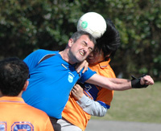
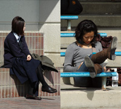

OLD STORIES - March 2009
Sun Shines on the Panthers in the Windy City!
 |
|
Defensive action - Riaz Donaldson clears the ball for Shane FC. |
Misato, Saturday 28th March
The thought of getting up on a Sunday morning after a night drinking under the sakura to catch an early train out to the windy, dusty pitch that is Misato must have filled the team with dread! I however did all those things except the train and I have to say a car is the way to go! Still we all got there in some kind of condition, some hungover (naming no names), some with digestive issues (not sure Asahi pay the cleaners enough to go near that toilet again) and some in the peak of health, well, peak of health maybe a little extravagant. Still, we had a full team AND two subs, almost unbelievable.
more ...
LR
'Shut that Door!' YCAC smash BFC's Larry Graysons
YC&AC, Saturday 28th March
Usually it is the Taw family playing the Generation Game at YCAC.
BFC may have picked up the toys hurled by their 'best player' after last week's draw with Hibs but clearly should have kept a Tonka truck or two tucked down their shorts for this one.
Fill your boots with more cliches... more ...
AH
Improving Embassy hold Lions
 |
|
Manhandled - BEFC striker gets very close attention from the Lions defence |
Todoroki, Saturday 28th March
Two late goals, one for each side, rounded off an entertaining game in the trite conditions of Todoroki. A scrambled goal five minutes from time, looked to have given the Lions the points, but a trademark Takanori screamer gave BEFC a deserved share of the spoils.
Earlier in the week, it had looked like the Embassy were struggling to put together a team, let alone one to defeat a competitive Lions side that has enjoyed an impressive debut season in Division One. But a late rally of interest saw the Embassy assemble a team with a solid look throughout, and so it would prove as they settled well, despite safe-hands Eddie leaving clean-sheets Richie between the sticks for the first ten minutes. more ...
RH
Sala by the Numbers
Fukuda Denshi, Sunday 22nd March
Sala vs Swiss, an original TML/IFFL fixture that is best described, perhaps, against a backdrop of relevant statistics from campaigns past and present. And a few irrelevant ones as well.
To the numbers then. The Swiss turned up on a windy Sunday evening with the bare 11. Sala, on the other hand, had a full 16 once again and welcomed back Toby, Yusuke, Take, and Koji, but they were also without several of their own regulars – Brookey was back in Norwich, doing what it is that people do in Norwich, while Scotty and Sam followed Andy Cross’ lead in the Tokyo Marathon. more ...
GG
Sala Dig Deep to Gun Down Jets
YC&AC, Saturday 14th March
With another solid performance Sala took all three points in this titanic tussle, running out 3-2 winners after a spirited fightback by the Jets, and then running swiftly to the boozer to pound down some pints in celebration. Yata! more ...
ST
 |
|
'The latest in body art, by Will Kol! |
Football on the brain...
Misato, Sunday 22nd March
Stepping out of the van door at Misato you could have been thinking we had just stepped out of a plane 15,000 ft off the ground to go skydiving. It was pretty windy and cold, and like the goal nets too we wanted to fly away and never return, especially as we realized we had only six players. RWC had more that enough players taking up a full squad and both linesmen and more to spare. They had also brought out a couple of Geckoes as well. more ...
WK
 |
|
Zion's Keeper Maeda keeps the ball out. |
Zion FC strikes again
Hodogaya, Sunday 22nd March
Zion FC arrived at Hodogaya knowing that this was a really important game to win. The weather was chilly but good for soccer. We were well aware that Barbarians would put up a good fight as they always do.
The first game back in November saw Zion easily overpowered Barbarians 7-1.
We didn’t expect to repeat this but we knew that a win would give us some breathing space from the chasing Albion Old Boys and YC&AC 2nds. more ...
A
Rain Will Not Stop Play (this year either)!
 |
|
Dan Clark & James Stevenson celebrate winning the 5th FJ Charity tournament. |
Footy Japan Charity 7's Football Tournament, In aid of Jeannie and Billy’s Children’s Foundation (to find out more about Billy & Jeannie’s Children’s Foundation click here)
Friday, March 20th 2009.
Last year, rain delayed the Charity 6's by 1 month and even then it was still played in thick mud! This year with a beautiful new turf pitch, not even a monsoon like down-pour as the captains were about to make the draw, was enough to dampen the spirits let alone affect the running of this years Charity 7's. In fact it actually turned warm and sunny as the 17 teams vied for the various silverware on offer whilst simultaneously raising over ¥300,000 for JBCF. more ...
FJ.
|  |
|
George 'Pele' Clarkeson lauches himself clear of his zimmer frame to win a ball. |
Veteran Cohort Routs Barbarians
Oi Futo Dai Ichi, Saturday 7th March
The grizzled veterans of The Albion Old Boys are almost perversely proud of their ability to give opponents a good mugging while nicking a narrow win, so to label them Free-Flowing Entertainers might be a bit like complimenting Mel Gibson's Braveheart on his cute tartan skirt.
But the Old Boys may have to get used to the label as a 6-1 win over Barbarians made it 17 goals scored in the last 3 games, and moved the Albion into second place in TML Division 2. more ...
TC.
Panthers Solid but Lacking Bite
 |
|
Romen the Rambunctious avoids a wild strike from Kev Gray as Panthers hold Sun. |
Oi Futo Dai Ichi, Saturday 7th March
Friday afternoon, 2.28pm - the odds were stacked heavily against this game even going ahead. As Sid prepared for his latest driving ban he remained adamant that the clouds would disappear and 28mm of rain would somehow drain from the sandy oi futo surface.
Saturday morning, 8.00am. A clear day overlooks Tokyo, surely it's on. My bet is that 12 out of the 15 turn up, and 4 of them are hungover. more ...
RB.
French Kippered - by The Salmon
ASIJ, Sunday 8th March
Groundhog Day with 'The Salmon' spawning a hat-trick as BFC spanked the French 6-1 in what is becoming almost a weekly meeting between the teams. more ...
AH.
10-man Embassy Grind Out Draw
|  |
|
Spectators enthralled by the action during the BEFC vs Swiss match! |
Oi Futo Dai Ichi, Saturday 7th March
BEFC and Swiss played out a largely uneventful goalless draw in the dirt of Oifuto, giving the Embassy their first clean sheet and only their second point of the season.
Indeed, they will have left the happier of the two sides having played the last half hour with only ten men. more ...
RH.
Vags back in the Points
Oi Futo Dai Ichi, Saturday 7th March
Vags hauled themselves out of the quicksand of successive defeats with a gritty if monochrome performance against Jetro to draw 0-0. more ...
GQ.
Battling Embassy go Down to Leaders
YC&AC, Sunday 1st March
Hibs vs BEFC, Top vs bottom, Goal difference: plus 46 vs minus 34. Hibs’ top marksmen had scored the same number of goals as the entire Embassy team, for christ’s sake! Surely this was the most uneven match-up since the inception of TML. The Hib’s won of course, but they certainly knew they’d been in a game, and BEFC can be proud of their performance. more ...
RH.